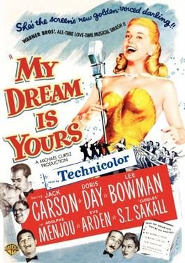

My Dream Is Yours
Starring: Jack Carson, Doris Day, Lee Bowman
Director: Michael Curtiz, Friz Freleng
Writer: Harry Kurnitz
Producer: George Amy, Michael Curtiz
My Dream Is Yours is a 1949 American Technicolor musical romantic comedy film directed by Michael Curtiz and starring Jack Carson, Doris Day, Lee Bowman and Eve Arden. This was a loose remake of the 1934 Twenty Million Sweethearts, starring Dick Powell and Ginger Rogers.
Trivia
- The film serves as a remake of Twenty Million Sweethearts (1934), in which the aspiring singer was male.
- The film Swing Hostess (1944) also had a similar plot, in which aspiring singer Judy Alvin (Martha Tilton) is spinning records in a jukebox factory, and her roommate and friend Marge (Iris Adrian) tries to help her start her career.
- Eve Arden has a key supporting role as Vivian "Vi" Martin, Doug Blake's co-worker in the radio show The Hour of Enchantment.
Previous Showings
2 Runs • 1 Festival
Original Billings: 1 run (June 16, 1949)
Original Run: June 16, 1949 (Thursday - Saturday)
All runs on record (2):
- June 16, 1949 (Thursday - Saturday)Jack Carson, Doris Day
- May 8 - 9, 2019Doris Day Festivalw/ It's a Great Feeling